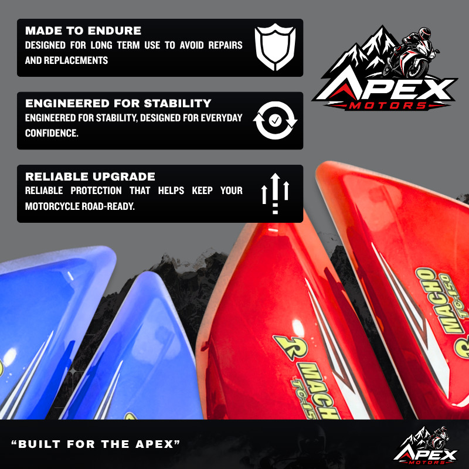
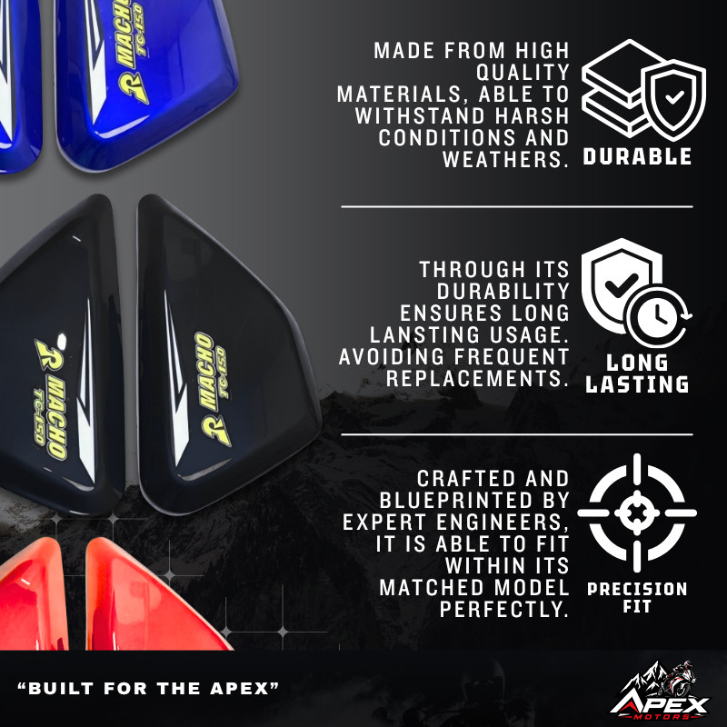
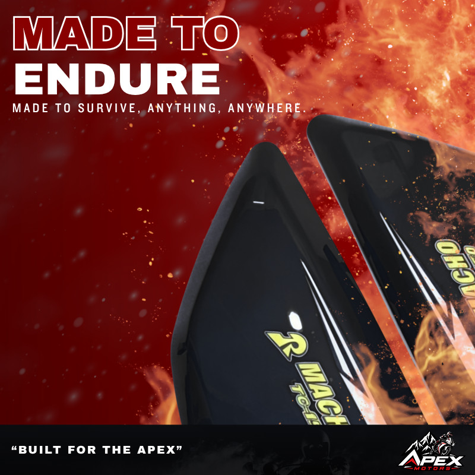

Bike parts · 29 September 2026
Rusi Macho TC150 battery side cover.
A left-and-right pair for the battery side of a Rusi Macho TC150. The listing photos show the same pair in blue, black, and red, with a Macho TC150 sticker on each panel.




Which motorcycle
The title and the sticker on the panels name the Rusi Macho TC150. Do not order this pair for another Rusi, a Smash, or a scooter. On the parts-by-bike page, it appears only when that model is selected.
Which color
Blue, black, and red are the finishes in the listing photos. Pick the color that matches the bodywork you already have. The sticker is printed on the cover in those photos, so you are not matching a plain panel to a separate decal sheet.
Hold the old cover next to the photo before you order. A battery side panel from a different year can look close and still miss the bolt holes.